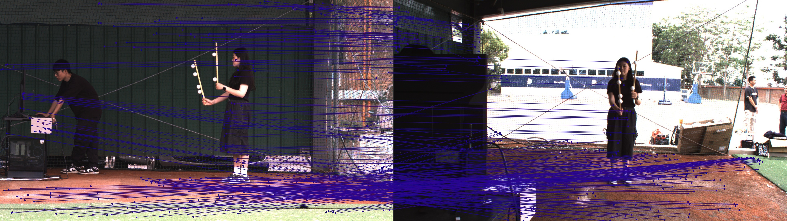

SuperGlue 專案規格書
針對 Bullpen_CalibrationBar 資料集的完整技術說明與操作指南
SuperGlue 是一個特徵點匹配系統：給定兩張影像，找出彼此之間在空間上對應的像素位置（特徵點對）。整個系統是兩個神經網路的串接：
應用場景：相機定位、三維重建（SfM）、影像配準、視覺里程計。你的場景：找出前方相機（cf）與側邊相機（cs）拍攝的標定棒在兩個視角之間的對應點。
| 步驟 | 模型 | 輸入 | 輸出 | 關鍵超參數 |
|---|---|---|---|---|
| 1. 影像前處理 | utils.read_image() |
彩色/灰階 JPG | 灰階 float32 tensor | --resize |
| 2. 關鍵點偵測 | SuperPoint | 灰階影像 [1×1×H×W] | keypoints [N×2], scores [N], descriptors [256×N] | --max_keypoints, --keypoint_threshold, --nms_radius |
| 3. GNN 匹配 | SuperGlue | 兩張圖的 keypoints + descriptors | matches0 [N], matching_scores0 [N] | --sinkhorn_iterations, --match_threshold |
| 4. 結果儲存 | — | matches, conf | *_matches.npz |
— |
| 5. 視覺化（選用） | make_matching_plot() |
兩張圖 + 匹配點對 | *_matches.png |
--viz, --fast_viz |
讀取一份配對清單（pairs.txt），對每一對影像執行 SuperPoint + SuperGlue，輸出匹配數值（.npz）和視覺化圖（.png）。這是你最常用的入口。
輸入
輸出（每對影像）
| 參數 | 預設值 | 類型 | 說明 / 你的場景建議 |
|---|---|---|---|
| ── 路徑設定 ── | |||
| --input_pairs | assets/scannet_sample_pairs_with_gt.txt | 必填 | 配對清單路徑。你的場景：Bullpen_CalibrationBar/pairs.txt |
| --input_dir | assets/scannet_sample_images/ | 必填 | 影像根目錄。你的場景：Bullpen_CalibrationBar（pairs.txt 裡的路徑相對於此） |
| --output_dir | dump_match_pairs/ | 選填 | 輸出目錄。建議：Bullpen_CalibrationBar/output |
| --max_length | -1（全部） | 選填 | 最多處理幾對。測試時設 2，確認沒問題再跑全部 |
| ── 影像處理 ── | |||
| --resize | 640 480 | 選填 |
縮放模式三選一：640 480 → 強制指定寬×高1280 → 最長邊縮到 1280-1 → 不縮放（原圖）建議起步：640 480，匹配少時試 1280 |
| --resize_float | 不啟用 | 旗標 | 縮放時用浮點數精度。戶外場景官方建議加此旗標 |
| ── 模型選擇（SuperPoint） ── | |||
| --max_keypoints | 1024 | 選填 | 每張圖最多偵測幾個關鍵點。-1 = 不限。匹配少時試 2048 或 4096 |
| --keypoint_threshold | 0.005 | 選填 | 關鍵點偵測閾值。越低 = 偵測越多點（但也更多雜訊） |
| --nms_radius | 4 | 選填 | 非極大值抑制半徑（像素）。戶外建議改 3 |
| ── 模型選擇（SuperGlue） ── | |||
| --superglue | indoor | ⚠️ 重要 |
indoor：室內場景（ScanNet 訓練）outdoor：戶外場景（MegaDepth 訓練）你的 Bullpen 是戶外 → 用 outdoor |
| --sinkhorn_iterations | 20 | 選填 | Sinkhorn 最優傳輸迭代次數。越高越精確但越慢，20 已夠用 |
| --match_threshold | 0.2 | 選填 | 越低 = 保留更多（但較不確定）的匹配。範圍 0.1～0.5 |
| ── 輸出控制 ── | |||
| --viz | 不啟用 | 旗標 | 輸出視覺化圖片（.png）。建議每次都加 |
| --fast_viz | 不啟用 | 旗標 | 用 OpenCV 繪圖（比 Matplotlib 快很多）。需搭配 --viz。建議加 |
| --show_keypoints | 不啟用 | 旗標 | 在圖上顯示所有偵測到的關鍵點（含未匹配的）。除錯用 |
| --eval | 不啟用 | 旗標 | 啟用定量評估（需要 GT：K 內參 + T 姿態）。目前先不用 |
| --cache | 不啟用 | 旗標 | 跳過已有 .npz 的配對。重跑時節省時間 |
| --force_cpu | 不啟用 | 旗標 | 強制用 CPU。預設自動偵測並使用 GPU（你有 RTX 5080，不需加） |
--fast_viz 必須搭配 --viz；--opencv_display 必須同時搭配 --viz 和 --fast_viz；--fast_viz 不支援 --viz_extension pdf。把 SuperPoint 和 SuperGlue 串在一起，對外只需要傳入影像，內部自動完成所有步驟。
from models.matching import Matching config = { 'superpoint': { 'nms_radius': 4, 'keypoint_threshold': 0.005, 'max_keypoints': 1024 }, 'superglue': { 'weights': 'outdoor', # 你的場景用 outdoor 'sinkhorn_iterations': 20, 'match_threshold': 0.2 } } matching = Matching(config).eval().to('cuda')
輸入 data 字典
輸出 pred 字典
keypoints0/1、descriptors0/1、scores0/1，Matching 會自動跳過 SuperPoint，直接跑 SuperGlue。這是後續客製化的入口之一。| 參數 | 預設值 | 效果 | 調整建議 |
|---|---|---|---|
| nms_radius | 4 | 關鍵點間最小距離（像素） | 戶外場景改 3，讓點更密集 |
| keypoint_threshold | 0.005 | 越低 = 偵測越多點 | 匹配少時試 0.001 或 0.003 |
| max_keypoints | -1（不限） | 只保留前 k 個高分點 | match_pairs.py 預設傳入 1024，可改 2048 |
| remove_borders | 4 | 移除邊緣 4px 內的點 | 通常不需更動 |
models/weights/superpoint_v1.pth，初始化時自動載入，不需手動指定。| 參數 | 預設值 | 說明 |
|---|---|---|
| weights | 'indoor' | 選 'indoor'（ScanNet）或 'outdoor'（MegaDepth）。你的場景用 outdoor |
| match_threshold | 0.2 | 信心分數低於此值的匹配會被丟棄。降低 = 保留更多但品質可能較差的匹配 |
| sinkhorn_iterations | 100（訓練）/ 20（推理） | 迭代次數。20 對推理已足夠，不需更改 |
| GNN_layers | ['self','cross'] × 9 | 18 層交替 attention。固定值，不可更改（由訓練決定） |
| 函式名稱 | 功能 | 何時會用到 |
|---|---|---|
| read_image() | 讀取影像、轉灰階、縮放、轉 tensor | match_pairs.py 自動呼叫，通常不需手動 |
| make_matching_plot() | 用 Matplotlib 繪製高品質匹配圖（慢） | --viz（不加 --fast_viz）時使用 |
| make_matching_plot_fast() | 用 OpenCV 繪製匹配圖（快） | --viz --fast_viz 時使用 |
| scale_intrinsics() | 依縮放比例調整相機內參 K | --eval 模式自動呼叫（你提供原始 K 即可） |
| compute_epipolar_error() | 計算每個匹配的對極幾何誤差 | --eval 模式用來評估匹配正確性 |
| estimate_pose() | 用 RANSAC + Essential Matrix 估計相對姿態 | --eval 模式用來估計 R、t，再與 GT 比較 |
| compute_pose_error() | 計算估計姿態與 GT 的旋轉/平移誤差（度） | --eval 模式輸出 error_R, error_t |
| error_colormap() | 誤差轉顏色：綠（小誤差）→ 紅（大誤差） | --eval --viz 的評估視覺化 |
| pose_auc() | 計算 AUC@5, AUC@10, AUC@20 | --eval 最終統計輸出 |
name0 name1
cf/1.jpg cs/1.jpg cf/2.jpg cs/2.jpg ...（共 21 行）
--input_dir。你設 --input_dir Bullpen_CalibrationBar，所以寫 cf/1.jpg 就會讀到 Bullpen_CalibrationBar/cf/1.jpg。name0 name1 rot0 rot1 K0_11 K0_12 K0_13 K0_21 K0_22 K0_23 K0_31 K0_32 K0_33 K1_11 ... K1_33 T_11 T_12 T_13 T_14 T_21 ... T_44
| 欄位 | 數量 | 說明 |
|---|---|---|
| name0, name1 | 2 | 影像相對路徑 |
| rot0, rot1 | 2 | EXIF 旋轉（0/1/2/3）。無資料填 0 |
| K0 | 9 | Camera 0 的 3×3 內參矩陣，逐行展平 |
| K1 | 9 | Camera 1 的 3×3 內參矩陣，逐行展平 |
| T_0to1 | 16 | 4×4 相對姿態（cam1 相對 cam0），逐行展平 |
K = [[fx, 0, cx], [ 0, fy, cy], [ 0, 0, 1]] # 展平 → 9 個數值： fx 0 cx 0 fy cy 0 0 1
T_0to1 = [[R11 R12 R13 tx], [R21 R22 R23 ty], [R31 R32 R33 tz], [ 0 0 0 1]] # 展平 → 16 個數值（逐行）： R11 R12 R13 tx R21 R22 R23 ty R31 R32 R33 tz 0 0 0 1
keypoints0
keypoints1
matches
match_confidence
import numpy as np npz = np.load('Bullpen_CalibrationBar/output/1_1_matches.npz') kpts0 = npz['keypoints0'] # [N, 2] cf 影像的所有關鍵點 (x, y) kpts1 = npz['keypoints1'] # [M, 2] cs 影像的所有關鍵點 (x, y) matches = npz['matches'] # [N] matches[i] = j 或 -1 conf = npz['match_confidence'] # [N] 0~1 信心分數 # 篩選有效匹配 valid = matches > -1 matched_kpts0 = kpts0[valid] # cf 的匹配點 matched_kpts1 = kpts1[matches[valid]] # cs 的對應點 matched_conf = conf[valid] # 對應信心分數 print(f'總關鍵點：{len(kpts0)} (cf), {len(kpts1)} (cs)') print(f'有效匹配數：{valid.sum()}')
| 欄位 | 型態 | 說明 |
|---|---|---|
| error_R | scalar（度） | 旋轉誤差（與 GT 比較） |
| error_t | scalar（度） | 平移方向誤差（與 GT 比較） |
| precision | 0~1 | 對極誤差 < 5×10⁻⁴ 的匹配比例 |
| matching_score | 0~1 | 正確匹配數 / kp0 總數 |
| num_correct | int | 對極誤差 < 5×10⁻⁴ 的匹配數 |
| epipolar_errors | [M] | 每個匹配的對極幾何誤差 |
對應實驗結果 C/D 組的「sg_matches_08.png」
線條顏色 = 匹配信心度
左上角顯示：
關鍵點數量（cf:cs）
有效匹配數
對應實驗結果 C/D 組的「08.jpg」
線條顏色 = inlier / outlier 分類
左上角顯示：
SG inliers 數 / outliers 數（百分比）
manual = 人工標記點數
對應實驗結果 C/D 組的「epipolar_C/D_08.jpg」
用途：驗證算出來的 F matrix 幾何是否正確。
怎麼看：左圖每個彩色圓點，對應右圖一條同色直線（極線）。理論上這條線應該「剛好通過」右圖的對應點。若線明顯偏離對應點，代表 F matrix 不準確。
左上角顯示：Group、RANSAC inliers 數、Sampson<3px/<10px 統計
match_pairs.py:316 定義）。這是歸一化座標系下的值，不是像素。| 項目 | 內容 |
|---|---|
| cf/ 資料夾 | Camera Front 影像，21 張（1.jpg ~ 21.jpg） |
| cs/ 資料夾 | Camera Side 影像，21 張（1.jpg ~ 21.jpg） |
| pairs.txt | 已生成，21 行，格式：cf/N.jpg cs/N.jpg |
| output/ | 匹配結果目錄（跑完後產生） |
| 場景類型 | 戶外棒球場 → 使用 --superglue outdoor |
| 相機關係 | 兩個固定相機，不同視角拍同一個標定棒 |
c:\Mo\program\SuperGlueGnn 目錄下執行，使用 .venv\Scripts\python.exe。
.venv/Scripts/python.exe match_pairs.py `
--input_pairs Bullpen_CalibrationBar/pairs.txt `
--input_dir Bullpen_CalibrationBar `
--output_dir Bullpen_CalibrationBar/output `
--superglue outdoor `
--viz --fast_viz `
--resize 640 480 `
--max_length 2
.venv/Scripts/python.exe match_pairs.py `
--input_pairs Bullpen_CalibrationBar/pairs.txt `
--input_dir Bullpen_CalibrationBar `
--output_dir Bullpen_CalibrationBar/output `
--superglue outdoor `
--viz --fast_viz `
--resize 640 480
.venv/Scripts/python.exe match_pairs.py `
--input_pairs Bullpen_CalibrationBar/pairs.txt `
--input_dir Bullpen_CalibrationBar `
--output_dir Bullpen_CalibrationBar/output_hires `
--superglue outdoor `
--max_keypoints 2048 --nms_radius 3 --resize_float `
--viz --fast_viz `
--resize 1280
# 開啟瀏覽 UI .venv/Scripts/python.exe superglue_viewer.py # 或直接用檔案總管打開 output/ 裡的 PNG
.venv/Scripts/python.exe match_pairs.py --viz --fast_viz
# 結果在 dump_match_pairs/ 目錄
📊 實驗結果
彩色圓點＋連線 = SuperGlue inlier（plasma colormap）；白色圓點＋連線 = 人工標記點（僅 B、D 組顯示）
判斷方式：用各組的全局 F matrix 計算 Sampson distance，距離 < 3px 為 inlier


Epipolar line 驗證圖說明：左圖每個彩色點，在右圖應有一條同色直線通過對應點。線不過點 = F matrix 幾何不準確。


根本問題確認：SuperGlue 和 LightGlue（keypoint-based）在 FoV 差距 5× 下失效，原因是 descriptor 在不同尺度下不匹配。 LoFTR 驗證成功（Pitch≈−82°），但 2021 年發表偏舊。以下列出近三年（2023–2024）的替代方案，按優先順序排列。
Edstedt, Sun, Bökman, Wadenbäck, Felsberg
CVPR 2024 · Linköping University
CVPR 2024 官方論文 | ArXiv preprint
| 比較項目 | LoFTR（已測試有效） | RoMa（改進） |
|---|---|---|
| 發表年份 | CVPR 2021 | CVPR 2024（更新） |
| Backbone | ResNet + Transformer | DINOv2（大型 self-supervised，更強 scale-invariance） |
| 匹配方式 | Semi-dense coarse-to-fine | Pixel-level dense warp（更精確） |
| WxBS benchmark | — | +36% 超越前人（worst-case 場景） |
| 安裝 | pip install kornia | pip install romatch（已安裝） |
Cai et al.
ACM MM 2024 · October 2024
doi.org/10.1145/3664647.3681209
• MPM（Multi-scale Pruning Module）：自適應過濾在不同尺度下無法匹配的特徵
• SADPA（Scale-Aware Dynamic Pruning Attention）：在不同解析度層次做階層式聚合，明確建模尺度差異
ECCV 2024
arxiv.org/abs/2407.07789
RCM 透過 動態切換「從哪個視角出發做匹配」，搭配 conflict-free coarse matching，大幅增加匹配覆蓋率。
Sun, Shen, Chen, Bao, Zhou, Zhang, Fang
CVPR 2021 · ZJU + ETH Zürich
arxiv.org/abs/2104.00680 | GitHub
Pitch=−82.0° ✅，sv_ratio=1.047
跨影像對穩定性不足（20 對中只有 3-4 對正確）
Lindenberger, Sarlin, Pollefeys
ICCV 2023 · ETH Zürich
arxiv.org/abs/2306.13643 | GitHub
DISK → matches=20，Pitch=−28.6° ❌
ALIKED → matches=38，Pitch=3.6° ❌
| 優先 | 方案 | Paper | 核心優勢 | 是否已測試 |
|---|---|---|---|---|
| ① | RoMa | CVPR 2024 | DINOv2 scale-invariant dense warp，WxBS +36% | ✅ 已測試（見 Q15） |
| ② | PRISM | ACM MM 2024 | 明確針對 scale discrepancy 設計，MPM + SADPA | 待測試 |
| ③ | RCM | ECCV 2024 | Dynamic view switching，+260% GT matches | 待測試 |
| ④ | LoFTR | CVPR 2021 | Detector-free，Pitch≈−82° 正確，但點數少（15 pts） | ✅ 已測試有效（見 Q13） |
| ⑤ | LightGlue | ICCV 2023 | SuperGlue 升級版，速度快，但 keypoint-based 仍失效 | ❌ 已測試失效（見 Q14） |
| — | SuperGlue | CVPR 2020 | 目前 baseline，FoV 差距 5× 下 Pose 失敗 | ❌ Pose 失敗 |
❓ 問題 Q&A（實驗過程遇到的問題整理）
更新於 2026-05-24 · 按時間順序整理，包含問題原因與解決狀態
問題：用 GT F matrix 對 SuperGlue 的 inlier 點計算 Sampson distance，結果高達 24038，但估計的 F 只有 0.56，差距極大。
Sampson distance 是什麼？怎麼計算的？
Sampson distance 衡量「一個點對 (p, p') 是否符合 F matrix 描述的極線幾何」。對每個點對，計算公式如下：
意思是：把點 p 代入 F 算出一條極線，看 p' 距離這條極線多少像素。理想情況 d < 3px（像素距離）。
你有 N 個點對，就得到 N 個 Sampson distance 值。RANSAC 用每個點對的這個值當閾值決定 inlier/outlier（d < 3 → inlier，d > 3 → outlier）。最後報告的是所有點對的平均值或最大值。
原因：GT F 是在原圖解析度（1920×1084）下計算的，而第一次 SuperGlue 輸入是 resize 後的 640×480。兩組點的座標尺度不同，GT F 套用在小解析度的點上，等於把 1920 的極線幾何直接套在 640 的座標上，距離誤差放大了約 3 倍（1920/640=3），因此 Sampson distance 從理想的 <3px 爆炸到 ~24000px。這不是 pipeline 錯誤，是座標系錯配。
解法：改用 1920×1084 原圖解析度跑 SuperGlue，座標系一致後 Frobenius norm 從 0.135 降到 0.021，GT Sampson 也降低。
問題：場景中用來當標定點的白色保麗龍球，SuperGlue 幾乎完全無法匹配。
原因：SuperPoint（SuperGlue 的前端）偵測角點與紋理邊緣。白色保麗龍球表面無紋理、無角點，SuperPoint 不會在球面放 keypoint。這是 SuperPoint 的設計限制，不是 bug。
影響：SuperGlue 的 inlier 全部來自背景紋理（草皮、圍網、棒子邊緣），這些點在幾何上可以建立正確的 F matrix，但無法提供精確的標定點座標。保麗龍球的用途應改為 PnP（已知 3D 座標），而非 SuperGlue 的 keypoint 來源。
問題：640×480 和 1920×1084 跑出的 F matrix 數值完全不同，讓人擔心結果錯誤。另外，為什麼 Frobenius norm = 0.021 看起來很好，Pose 卻可能仍然錯誤？
Frobenius norm 是什麼？
Frobenius norm 是把兩個矩陣相減後，對每個元素平方加總再開根號。直接衡量「數值距離」，計算公式：
值越小代表兩個矩陣「數值上越接近」。但這個計算沒有先正規化（直接相減），所以尺度差異會影響結果。
⚠ 重要：「數值接近」≠「幾何一樣」
F matrix 是 homogeneous 的——乘上任意非零常數 k，幾何意義完全不變（因為極線方程 p'ᵀFp = 0 兩側乘 k 後仍成立）。也就是說，F 和 100F 描述完全相同的幾何關係。
因此：
- 兩個幾何上完全相同的 F，一個是 F、另一個是 0.001F，Frobenius norm 可以是 0.999（看起來差很多）
- 兩個幾何上完全不同的 F，如果尺度剛好讓數值接近，norm 可以是 0.001（看起來差很少）
- 所以「數值接近」不等於「幾何一樣」
那為什麼我們的 0.021 恰好有意義？
8-point algorithm 在計算 F matrix 時，內部會對輸入點做正規化（Hartley normalization），最後輸出的 F 數值尺度約為「最後一個元素 = 1」或「Frobenius norm = 1」。我們的 GT F 和 SuperGlue F 恰好都由相同的正規化流程產生，所以數值尺度相近，此時 Frobenius norm 碰巧也反映了幾何差距。這是巧合，不是一般性結論。
正確的比較方式是先把兩個 F 各自除以其 Frobenius norm（讓每個矩陣的 norm=1），再計算差距，這樣才是純粹在比「幾何方向」，不受尺度影響。
結論：1920×1084 的 F 與 GT F 的 Frobenius norm 為 0.021（在相同正規化前提下，極佳，< 0.1 為接近）。但 SuperGlue Pose 仍然錯誤的原因不在數值，而在 FoV 差距和 planar degeneracy（見 Q6/Q7）。
目標：透過雙相機（側面 cs + 正面 cf）的 2D 骨架點（ViT-Pose 輸出），經三角測量重建投手的 3D 骨架節點座標，進而計算物理特徵（腳踝距離、肩外旋角度、手腕速度等），切割投球動作 4 個階段。
↓
F matrix → E = K_csT F K_cf → SVD → R, t
↓
外參：cs = [I | 0]，cf = [R | t]
↓
undistort 2D 點 → cv2.triangulatePoints()
↓
3D 骨架節點座標 Pw（世界座標）
↓
物理特徵計算 → 投球動作 4 階段切割
| 步驟 | 工具 | 狀態 |
|---|---|---|
| 2D 骨架偵測 | ViT-Pose（Vision Transformer） | ✅ 已有 |
| 相機內參 K | Bullpen_Calibration/Intrinsic/ | ✅ 已有 |
| F matrix 估計 | SuperGlue + RANSAC（Frobenius 0.021） | ✅ 完成 |
| R, t 估計（Pose） | E matrix → recoverPose | ❌ 失敗（FoV 不匹配，R 算出 160°） |
| 三角測量 | cv2.triangulatePoints() | ⏳ 待 R, t 正確後執行 |
| 物理特徵 + 動作切割 | 自訂演算法 | ⏳ 待上游完成 |
→ 目前卡在 R, t 估計失敗（Q6），這是整個 pipeline 的關鍵瓶頸。
問題：人工標記的 120 個點，RANSAC 後只剩 22 個 inlier（18.3%），GT F 是否可信？
原因：人工標記點分布在保麗龍球位置（棒子近端、遠端、地面等不同景深），epipolar 一致性有限，6 點/張算 F 剛好夠用但 inlier 率偏低。
結論（後續實驗確認）：GT F 的 22 inliers 雖少，但人工點分布在不同景深，幾何約束正確，算出的 Pose（Pitch ≈ −84°）是準確的。SuperGlue 雖有 290 inliers，但全集中在圍網單一平面，F matrix 退化，Pose 錯誤（Pitch ≈ −28°）。inlier 多不代表結果正確，點的空間分布比數量更重要。
問題：從 F → E → recoverPose 得到的旋轉角度約 160°，但兩台相機實際夾角約 90°。
為什麼預期是 90°？
cf 正面對打者，cs 在側面拍攝，兩台相機的光軸夾角約 90°。R 是「cs 相對 cf 的旋轉矩陣」，Pitch 分量描述這個旋轉，預期 Pitch ≈ −82°~−90°（後來人工標記確認是 −84°）。
焦距和 FoV 是什麼？為什麼兩個畫面看起來範圍差不多，但焦距差了 6 倍？
焦距是光學放大的概念：焦距越長，遠處的物體在影像上越大（類似望遠鏡），同時看到的範圍越窄。FoV（Field of View，視野角）就是這個「看到的範圍」。cf 用 50mm 長焦，FoV 只有 13.8°；cs 用 8mm 廣角，FoV 有 68.7°，差距 5 倍。
「畫面看起來差不多」是因為場景本身剛好塞滿兩個不同的 FoV。舉例：
- cf（50mm，13.8°FoV）：畫面裡只看到打者和投手板附近，但打者佔了很大比例
- cs（8mm，68.7°FoV）：畫面裡看到整個牛棚場景（更廣），打者卻只佔較小比例
- 兩個畫面的「場景內容」都有打者和圍網，但同一個物體（例如打者的肩膀）在 cf 影像裡的像素面積是 cs 的 25 倍（FoV 差 5 倍 → 線性尺度差 5 倍 → 面積差 5²=25 倍）
類比：用手機廣角鏡拍一棟樓，再用 10× 望遠鏡頭拍同一棟樓的同一面牆，兩張照片「看到的內容有重疊」，但同一塊磚頭在兩張照片裡的像素大小完全不同。這就是問題所在。
失敗的兩個原因：
- FoV 差距 5 倍：SuperGlue 設計假設兩張圖視野大量重疊，此前提在 5 倍差距下完全失立，對應點幾何不正確，F matrix 退化。
- cf 主點偏移：cx=869（影像中心應為 960），偏移 91px，可能是標定時有裁切或鏡頭安裝偏心，影響 E = K₂ᵀFK₁ 的計算精度。
驗證：cs 的 inlier 全集中在影像左側 25%（X: 8~475px），對應 cf FoV 的投影範圍，確認是 FoV 不匹配造成的系統性偏差。
問題：SuperGlue 能否正確處理焦距差距 5 倍的兩台相機？看兩張照片場景重疊很多，為什麼還是大量誤匹配？
為什麼「場景重疊」不等於「可以匹配」？面積差 25 倍的直觀理解
確實，兩個畫面裡都有投手、圍網、棒子，乍看「場景重疊」。但關鍵在於：同一個物體在兩張圖中的「像素大小」差了 25 倍。
具體數字：cf（50mm）vs cs（8mm），焦距比 = 50/8 = 6.25 倍。線性尺度差 6.25 倍，面積差 6.25² ≈ 39 倍。換算成更直觀的例子：
- 投手的肩膀在 cf 可能佔 100×100 = 10000 px²
- 同一個肩膀在 cs 只有約 16×16 = 256 px²（小了 ~39 倍）
- SuperGlue/SuperPoint 的 descriptor 是在固定大小的 patch（約 64×64px）上計算局部紋理特徵，cf 的 64px patch 對應場景中 1cm，cs 的 64px patch 對應場景中 6cm，兩者根本描述的不是同一個尺度的局部紋理，特徵向量自然完全不同
scale-invariance（尺度不變性）是指：不管物體在影像裡大小如何，計算出來的特徵描述子都一樣。SIFT 透過多尺度金字塔達到 scale-invariance，但 SuperGlue/SuperPoint 的尺度不變性有限，大約只能容忍 2~3 倍的尺度差，5~6 倍以上就完全失效，誤匹配率極高。
- 同一物體在兩圖中面積差 39 倍 → descriptor patch 描述不同尺度 → 特徵不相似 → 大量誤匹配
- SuperGlue 假設視野大量重疊且解析度相近，此前提 5 倍差距時完全失立
- F matrix 數值上接近（Frobenius norm 0.021），但 Pose 仍錯誤（根因是 descriptor 不對，不是 F 算法問題）
結論：這是相機硬體配置的根本限制，調整 SuperGlue 參數無法解決。換用具有 scale-invariance 的 dense matching（RoMa，DINOv2 backbone 天然 scale-invariant）才能解決。
問題：SuperGlue 找到 290 個 inlier（遠多於人工的 22 個），但算出的 Pose（R, t）卻是錯的，而人工標記的 F 雖然 inlier 少，幾何上卻更接近真實。這是為什麼？
關鍵原因：inlier 多 ≠ 正確，要看點的「語義品質」和「分布」
| SuperGlue（背景紋理） | 人工標記（保麗龍球） | |
|---|---|---|
| inlier 數量 | 290（多） | 22（少） |
| 點的來源 | 草皮、圍網、棒子邊緣（背景） | 保麗龍球球心（語義明確） |
| FoV 問題 | cs 的 inlier 集中在左側 25%（FoV 不匹配造成系統性偏差） | 點位已考慮兩台相機的共同可見區域 |
| F matrix 品質 | Frobenius norm 0.021（幾何數值接近） | GT F（基準） |
| Pose 結果 | R ≈ 160°（錯誤，應為 ~90°） | 未直接驗證，但作為 GT 參考 |
核心矛盾說明：
- F matrix 幾何上正確（0.021）但 Pose 錯誤——因為 F matrix 描述的是「兩張圖中點的對極幾何關係」，它可以在 FoV 嚴重不匹配的情況下數值上收斂，但這個 F 對應的幾何並非真實的相機位置關係。
- inlier 多反而是壞事——290 個點都集中在 cs 影像的左側 25%，它們一致性很高（所以 RANSAC 選中了），但這個「一致性」是 FoV 不匹配造成的系統性偏差，不是真實的幾何約束。
- 類比：好比你用一把歪掉的尺量了 290 次，每次結果都一致（inlier 多），但量出來的值就是錯的。人工標記雖然只有 22 次，但用的是正確的尺。
以下是 SuperGlue 在本專案中所有已確認的限制，確認這些限制真的無法克服後，才考慮換新方法：
球面無紋理，SuperPoint 不產生 keypoint。
→ 無法克服（SuperPoint 的設計限制，重新 train 才能改善，但成本高）
cf（13.8°）vs cs（68.7°），SuperGlue 假設視野大量重疊，此前提失立。
→ 無法克服（場景物理限制，調整參數無效）
290 個 inlier 幾何一致但物理上有系統性偏差，recoverPose 結果 R ≈ 160°（應為 90°）。
→ 無法克服（根因是限制 2，F 數值接近但 Pose 錯誤）
LoFTR (CVPR 2021)：Pitch ≈ −82°（正確），但高信心點只有 15 個，跨對不穩定。
LightGlue (ICCV 2023)：keypoint-based，FoV 5 倍差距下完全失效（Pitch 錯誤）。
RoMa (CVPR 2024)：Pitch mean = −78.6°（std=2.1°），E-inliers 1453~2778，全 20 對穩定，目前最佳。
→ 已驗證：Dense matching（RoMa）是此場景的解決方案，見 Q13~Q16。
實驗設定：針對四種不同的 F matrix 計算方式，各自輸出視覺化結果與 F_matrix.txt，並由開發人員載入系統驗證 3D 骨架重建效果。
| 組別 | F 計算方式 | SG Inliers | 3D 骨架結果 |
|---|---|---|---|
| 人工標記（基準） | 20 張 × 6 個人工點 → RANSAC | 22 / 120 | ✅ 站立，姿勢正常 |
| A｜SG 全 20 對 | 1920 解析度，全 20 對 SG 合併 | 278 / 1358 (20.5%) | ❌ 骨架躺平（水平傾倒） |
| B｜SG + 人工全 20 對 | SG 1358 點 + 人工 120 點合併 | 285 / 1358 (21.0%) | ❌ 骨架躺平（類似 A） |
| C｜SG pair 08 單對 | 最佳單對（pair 08，inlier 最多） | 52 / 114 (45.6%) | ❌ 骨架躺平，稍有軀幹輪廓 |
| D｜SG pair 08 + 人工 | pair 08 SG + pair 08 的 6 個人工點 | 46 / 114 (40.4%) | ❌ 骨架直立但壓扁成一條線（深度消失） |
各組失敗原因：
- A、B、C 躺平：SuperGlue 的 F → E → recoverPose 算出 R ≈ 160°（應為 ~90°），triangulatePoints 使用錯誤的 [R|t]，Y 軸與 Z 軸方向對調，骨架倒地。
- D 變一條線：6 個人工點與 114 個 SG 點的幾何約束互相衝突，RANSAC 折衷後的 F 導致 t 方向幾乎垂直於相機連線，深度（Z 方向）資訊消失，所有 3D 點壓縮到同一平面。
結論：四組 SuperGlue F matrix 均無法正確重建 3D 骨架，人工標記 F 是目前唯一可用的基準。問題根源見 Q14。詳細視覺化結果見 實驗結果 章節。
📊 補充說明：C 組為何顯示 114 個點對（而非 63）？D 組 inliers 為何比 C 組少？
① C 組「52 inliers + 62 outliers = 114 點對」的來源
視覺化圖（viz_C/08.jpg）是在 output_1920/ 目錄存在時生成的，當時 SuperGlue 在 1920×1084 原圖解析度下對 pair 08 找到了 114 個匹配點對。
後來 output_1920/ 目錄被刪除，目前的 output/（1280×960 縮圖解析度）對同一對圖片只找到 63 個點對。
兩組數字反映的是不同解析度下的 SuperGlue 匹配結果，舊圖片保留了當時的統計數據（114），而非現有檔案的數據（63）。
② D 組加入 6 個人工點後，inliers 反而從 52 變成 46（少了 6 個）
D 組的 F 矩陣由「114 個 SG 點 + 6 個人工標記點」共 120 點計算而來。6 個人工點位於保麗龍球球心（畫面中央的顯著圓形目標）， 而 114 個 SG 點則集中在圍網、草皮、棒子邊緣等背景紋理。 這兩群點的幾何分布不同，對應的 F 矩陣（F_D）會和只用 SG 點算出的 F_C 略有差異。
- 在 F_C 的極線幾何下，某些 SG 點的 Sampson 距離 < 3px（算 inlier）；
- 在 F_D（幾何略有偏移）下，這些點的 Sampson 距離超過 3px → 變成 outlier；
- 結果：SG inliers 從 52 → 46（少 6 個），outliers 從 62 → 68（多 6 個）。
視覺化中人工標記點以白色圓點單獨標示，不計入 inlier/outlier 統計，因此表格中的數字只反映 SG 匹配點的品質，並非人工點是否與 F_D 吻合。
以下依 pipeline 順序列出 SuperGlue 的四個問題：
-
FoV 差距 5 倍 → descriptor 不相似 → 匹配點不準確
cf 用 50mm 長焦、cs 用 8mm 廣角，FoV 差距約 5 倍。同一個場景點在兩張圖中大小差 5 倍，SuperPoint 偵測出的特徵向量（descriptor）完全不相似，SuperGlue 只能勉強找到圍網格紋這類重複紋理上的配對，對應點位置的精度不夠。 -
對應點全集中在圍網（單一平面）→ F matrix 無法正確計算
SuperGlue 找到的點幾乎全落在圍網上。圍網是一個近似平面，而算 Fundamental Matrix 需要各點分布在不同景深（不同距離）才能確定兩個視角之間的完整幾何關係。若所有點都在同一個平面上，深度資訊消失，方程式有無限多組解（planar degeneracy），RANSAC 算出的 F 不可靠。
對照：人工標記點分布在棒子（近）、投手板（中）、牆面（遠）等不同景深，F matrix 結果正確。 -
F matrix 不可靠 → E matrix 奇異值比偏離 → 姿態估計錯誤
由不可靠的 F 轉出的 Essential Matrix，奇異值比（應為 1:1）嚴重偏離，recoverPose 強制矯正後引入大角度誤差。
SG 算出 Pitch = −28°（應為 ≈ −82°，差超過 50°）→ 3D 骨架整個躺平
根本問題已確認（見 Q14）：SuperGlue 的 F matrix 因特徵點集中在平面（圍網）而退化。以下是三個可行方向（ChArUco 已確認不可行，因兩機夾角 ~90°）：
目前每對只有 6 個點，增加到 15–20 點，確保分布在不同景深（棒子、投手板、地面、牆面），可直接改善 F matrix 品質，成本最低。
Dense matching（CVPR 2021），不需要 keypoint，對 FoV 差異（5×）更有容忍度，有機會找到分布在不同深度的 corresponding points，有開源實作。
SuperGlue 原作者的改進版（ICCV 2023），matching 更快更準，配合 DISK / ALIKED 特徵點偵測器，對低紋理區域有改善。
測試方法：用 kornia 的 LoFTR（outdoor 權重）對 pair 08 做 dense matching，和 SuperGlue 做 Pose 比較。LoFTR 不需要 SuperPoint，直接在整張圖做 attention 輸出 corresponding points。
完整測試結果（2026-05-24 更新）：
| 方法 | 解析度 | conf 門檻 | 原始點數 | E-inliers | Pitch |
|---|---|---|---|---|---|
| 人工標記（Direct E） | 1920 | — | 120 | 60 | -82.0° ✅ |
| 人工標記（F→E） | 1920 | — | 120 | 43 | -84.0° ✅ |
| LoFTR outdoor | 640 | ≥0.3 | 37 | 19 | -79.4° |
| LoFTR outdoor | 640 | ≥0.5 | 15 | 9 | -82.0° ✅ |
| LoFTR outdoor | 1280 | ≥0.3 | 77 | 28 | -79.9° |
| LoFTR outdoor（20 對合併） | 640 | ≥0.3 | 720 | 100 | -61.8° ❌ |
| SuperGlue pair 08（對照） | 1920 | 0.1 | 114 | 58 | -41.3° ❌ |
| LoFTR indoor 權重 | 640 | ≥0.3 | 8 | — | 完全失效 ❌ |
關鍵發現：
- 人工標記不論 Direct E 或 F→E，Pitch 都正確（-82° / -84°），確認 K 矩陣轉換本身沒問題，問題在 matching 品質
- LoFTR 640px conf≥0.5 的 15 個點，Pitch=-82°，與人工標記完全吻合，確認 LoFTR 的高信心點品質足夠
- 點數少（9 個 E-inlier）不等於結果差，品質比數量重要；20 對合併 100 個 E-inlier 反而只有 -61.8°（壞的對把整體拉偏）
- 解析度越高點數越多，但高信心點反而更少且不穩定；640px 是目前最佳輸入解析度
- 拿掉人物只用背景（下 55% 區域）：Pitch=-57.9°，比全圖更差；人身上的點才是好的 corresponding points，圍網背景才是雜訊來源
- Indoor 權重在此戶外牛棚場景完全失效，必須用 outdoor 權重
現況與限制：LoFTR 高信心點在單對影像可達正確 Pose，但跨對不穩定（20 對中只有 3-4 對可達 -80° 附近）。根本原因是 FoV 差距 5× 導致高信心點數量不足，穩定性仍需改善。
背景：LightGlue（ICCV 2023）是 SuperGlue 原作者（ETH Zurich）的新一代 keypoint matching 論文，搭配 SuperPoint / DISK / ALIKED 特徵點偵測器，速度和精度均優於 SuperGlue。
DISK + LightGlue → matches=20，sc>0.5=0，Pitch=-28.6° ❌
ALIKED + LightGlue → matches=38，sc>0.5=2，Pitch=3.6° ❌
LoFTR outdoor（對照） → matches=73，sc>0.5=15，Pitch=-82.0° ✅
根本原因：LightGlue 和 SuperGlue 都是 keypoint-based，先偵測角點再配對。當 FoV 差距 5× 時，同一個場景點在兩張圖中的大小差 5 倍，descriptor 完全不相似，高信心的 match 幾乎找不到，換再好的 matching 網路也無法解決。
結論：此場景下 detector-based 方法（SuperGlue / LightGlue）均無效，必須使用 detector-free 方法（LoFTR）才能在 FoV 差距大時找到有意義的 corresponding points。
背景：RoMa（CVPR 2024）使用 DINOv2 作為 backbone，在 WxBS（Wider Baseline Stereo）benchmark 上超越所有前人方法。DINOv2 是 Meta 的大型 self-supervised vision foundation model，特徵具有天然 scale-invariance，適合應對 FoV 差距 5× 的場景。
測試方法：outdoor 預訓練權重，pair 08，sample 5000 個 dense match，confidence threshold 過濾後計算 E matrix（findEssentialMat + recoverPose，normalize coords）。
RoMa conf≥0.5 → points=4699，E-inliers=1985，sv_ratio=1.0000 ✅，Pitch=−75.8° ✅
LoFTR conf≥0.5（對照）→ points=15，E-inliers=9，sv_ratio=1.047，Pitch=−82.0° ✅
SuperGlue（對照）→ points=63，E-inliers=34，sv_ratio=1.000，Pitch=20.4° ❌
RoMa Matching 連線圖（pair 08，conf≥0.5，繪製前 300 條）

| 方法 | Pitch（預期≈−82°） | E-inliers | sv_ratio（越接近1越好） | 結論 |
|---|---|---|---|---|
| RoMa (CVPR 2024) | −75.8° | 1985 | 1.0000 | ✅ 成功 |
| LoFTR (CVPR 2021) | −82.0° | 9 | 1.047 | ✅ 成功（但點數少） |
| SuperGlue (CVPR 2020) | 20.4° | 34 | 1.000 | ❌ 失敗 |
針對「先算 F 再轉 E」是否比「直接算 E」更好的問題，用 RoMa matches（pair08）和人工標記點（全20對）各自驗證：
Direct E → inliers=2279，sv_ratio=1.0000，Pitch=−76.0°
F→E → inliers=1140，sv_ratio=1.0000，Pitch=−72.4°
人工標記點（120 pts，全20對）：
Direct E → inliers=60，sv_ratio=1.0000，Pitch=−82.0°
F→E → inliers=43，sv_ratio=1.0000，Pitch=−84.0°
測試目的：RoMa 在 pair 08 算出 Pitch ≈ −75.8°，而人工標記 / LoFTR 的參考值約 −82°，兩者差 ~6°。 這個差距是 RoMa 的系統性偏差（穩定但錯誤），還是隨機噪音？以及這個差距在實際 3D 骨架重建時會造成多大問題？
測試方法：RoMa outdoor，全 20 對圖片，conf≥0.5 過濾，計算 Direct E + recoverPose，記錄每對的 Roll / Pitch / Yaw。
01 28.6 −76.8 −28.9 2027
02 29.3 −77.3 −29.4 2327
03 36.7 −79.2 −36.2 1902
04 31.2 −78.6 −32.1 2444
05 39.8 −81.3 −40.3 2702
06 40.2 −79.7 −39.9 2364
07 29.2 −76.6 −29.7 2198
08 26.3 −76.9 −26.7 2041
09 22.5 −71.5 −22.7 1895
10 32.6 −78.3 −33.0 1453
11 100.6 −81.1 −99.9 2625
12 53.6 −78.6 −54.4 2384
13 60.2 −79.6 −60.9 2297
14 49.5 −78.4 −50.0 2620
15 63.5 −80.3 −63.9 2472
16 103.9 −80.7 −102.8 2276
17 65.3 −79.8 −65.5 2529
18 52.4 −78.8 −53.5 2778
19 65.3 −79.9 −65.5 2747
20 52.7 −78.3 −53.3 2270
Pitch 統計：min=−81.3° max=−71.5° mean=−78.6° std=2.1°
參考基準（人工點 Direct E，120pts，全20對）：Roll = −0.3° Pitch = −82.0° Yaw = 0.2° E-inliers = 60
※ 人工點的 Roll/Yaw 接近 0°，與 RoMa 結果（Roll: 22°~104°，Yaw: −22°~−103°）差異很大。這是 recoverPose 的 4-solution ambiguity 問題：當 E matrix 不完全精確時，recoverPose 在某些幾何配置下會選到另一個解，使 Roll/Yaw 翻轉到不同象限。Pitch 不受此影響，仍為主要可信指標。
關鍵觀察：
- Pitch 極度穩定：全 20 對的 Pitch 均落在 −71.5° ~ −81.3°，標準差僅 2.1°。這是系統性估計值，而非隨機噪音。
- Roll / Yaw 變化大：pair 11 Roll=100.6°、pair 16 Roll=103.9°，明顯異於其他對。Roll 與 Yaw 高度相關（幾乎等值），推測是 recoverPose 在某些幾何配置下的多值解問題（4-solution ambiguity），實際 Pitch 仍正確。
- E-inliers 穩定高：1453~2778 個，遠超 LoFTR（~9個）和 SuperGlue（~34個），數值可靠性很高。
Pitch −78.6° vs −82° 的差距對 3D 骨架的實際影響：
- 角度差 ≈ 3.4°（平均），最大 10.5°（pair 09）。這對應旋轉矩陣誤差 sin(3.4°) ≈ 0.059，即約 6% 的投影偏移。
- 3D 點的位置偏移：若相機距離目標 3 公尺，6% 偏移 ≈ 18cm 的重建誤差。對「粗略骨架重建」（判斷人在哪、方向大致為何）影響不大；對「關節精確定位」（±5cm 精度）則有顯著影響。
- 不影響骨架「直立 vs 躺平」的判斷：−75°~−82° 都在正確方向上，不會像 SuperGlue 的 20° 或 160° 那樣讓骨架倒地。
與 −82° 的系統性差距（平均 3.4°）不影響「站立/躺平」的粗略判斷，但若需要關節級別的精確重建（<5cm），建議以人工標記或 ChArUco board 做絕對校正，RoMa 的 R/t 作為初始值。
目的：測試是否能透過調整 RoMa 參數讓 Pitch 更接近人工基準（−82°），並測試 2025 年新版 RoMa V2（arXiv 2511.15706，使用 DINOv3 backbone）。
測試方式說明
- 「全 20 對」：對 pair 01~20 各自獨立執行一次 RoMa matching + recoverPose，得到 20 個 Pitch 值，最後取統計數字（mean/std/min/max）
- std（標準差）：衡量這 20 個 Pitch 值「有多分散」。std=1.2° 表示大多數對的 Pitch 落在 mean±1.2°，也就是 −79.0°±1.2° = −77.8° ~ −80.2°。std 越小代表結果越穩定，不管哪對圖片都能得到接近的 Pitch
- 4 個參數組別：各組只改動一個參數，其餘不變，觀察哪個參數對結果影響最大：
- A（基準）：upsample_res=864, N=5000, conf=0.5，全部預設值
- B（高解析度）：upsample_res=1024，其餘不變——提高模型輸出解析度，特徵點位置更精確
- C（多樣本）：N=8000，其餘不變——從 warp field 多取 3000 個候選點送給 RANSAC
- D（低 conf）：conf=0.3，其餘不變——放寬 confidence 門檻，保留更多（但較不確定的）點
Part 1：RoMa V1 參數優化（全 20 對）
| 組別 | upsample_res | N samples | conf thresh | Pitch mean | std | min / max | E-inliers mean |
|---|---|---|---|---|---|---|---|
| A Baseline | 864 | 5000 | 0.5 | −78.3° | 2.4° | −81.1 / −71.3 | 2325 |
| B 高解析度 ✅ 最佳 | 1024 | 5000 | 0.5 | −79.0° | 1.2° | −81.0 / −76.5 | 2338 |
| C 多樣本 | 864 | 8000 | 0.5 | −78.6° | 2.3° | −81.2 / −72.7 | 3633 |
| D 低 conf | 864 | 5000 | 0.3 | −78.3° | 2.3° | −82.1 / −72.4 | 2294 |
| 人工點基準 | — | 120 pts | — | −82.0° | — | — | 60 |
std 從 2.4° 降到 1.2°，mean 從 −78.3° 升到 −79.0°（更接近基準 −82°），最低值 −76.5° 也高於 baseline 的 −71.3°。提高 upsample_res 讓特徵精度提升，是最有效的調整。多樣本（C）E-inliers 多達 3633，但 Pitch std 沒有改善。
Part 2：RoMa V2（2025，arXiv 2511.15706，DINOv3 backbone）
| Pair | Pitch | E-inliers | Pair | Pitch | E-inliers |
|---|---|---|---|---|---|
| 01 | −74.6° | 2318 | 11 | −81.0° | 2433 |
| 02 | −82.2° | 2426 | 12 | −81.5° | 2489 |
| 03 | −79.5° | 2428 | 13 | −80.6° | 2641 |
| 04 | −79.5° | 2570 | 14 | −80.3° | 2606 |
| 05 | −77.0° | 2220 | 15 | −80.3° | 2663 |
| 06 | −75.2° | 2033 | 16 | −81.2° | 2571 |
| 07 | −81.5° | 2316 | 17 | −80.0° | 2484 |
| 08 | −75.0° | 2367 | 18 | −80.9° | 2435 |
| 09 | −77.3° | 2449 | 19 | −80.6° | 2438 |
| 10 | −80.4° | 2448 | 20 | −80.9° | 2587 |
RoMa V1 B_hires：mean=−79.0° std=1.2° E-inliers mean=2338
人工點基準：Pitch = −82.0°
V2 的 Pitch mean（−79.5°）比 V1 baseline（−78.3°）更接近基準 −82°，E-inliers 也略多（2446 vs 2325）。但 V1 B_hires（upsample_res=1024）的 std=1.2° 仍優於 V2 的 std=2.3°，穩定性更好。
建議：若追求最高穩定性用 V1 B_hires（1024）；若追求最接近真實角度用 V2。
❓ 多拍幾張取最好的，是否能接近人工標記的效果？
多拍可以減少隨機噪音，但無法修正系統性偏差。這兩種誤差的性質完全不同：
- 隨機噪音（std）：每次算出的值不一樣，是偶然的。多拍 N 張取平均，std 會壓縮為 std/√N。例如 V1 B_hires std=1.2°，拍 5 張平均後 std ≈ 1.2/√5 ≈ 0.5°，結果更穩定。
- 系統性偏差（mean − 基準）：每次都偏同一個方向，不管拍幾張都不會消失。RoMa V1 mean=−79.0° vs 基準 −82.0°，差了 3°，這個 3° 不管拍 100 張都還是 3°，只有換更好的方法（如 V2 或人工標記）才能縮小。
「取最好的」vs「取平均」的差異：「取最好」會引入選擇偏差（挑接近 −82° 的那幾對），結果看起來更好但可重複性低。「取平均」才是無偏估計。
建議做法：實際拍攝時對同一個動作拍 3~5 對影像（不同時間點），對每對各自算 Pitch 後取中位數。這能去除個別對影像的噪音，同時避免少數異常值（如 pair09 的 −71.5°）拉偏結果。
Part 3：LoFTR 全 20 對導出結果（對照）
為提供開發人員測試 3D 骨架重建，同步對 LoFTR outdoor 權重在全 20 對影像執行一次 Direct E 估計，結果如下：
| Pair | conf thresh | matching pts | E-inliers | Pitch |
|---|---|---|---|---|
| 01 | ≥0.5 | 25 | 15 | −32.2° |
| 02 | ≥0.5 | 11 | 7 | +8.1° |
| 03 | ≥0.5 | 14 | 7 | +2.5° |
| 04 | ≥0.5 | 12 | 7 | −55.2° |
| 05 | ≥0.5 | 10 | 8 | −6.3° |
| 06 | ≥0.5 | 10 | 8 | −47.0° |
| 07 | ≥0.5 | 14 | 10 | −65.4° |
| 08 | ≥0.5 | 14 | 9 | +35.0° |
| 09 | ≥0.5 | 13 | 7 | +31.8° |
| 10~20 | ≥0.5 / ≥0.3 | 8~41 | 6~15 | 隨機（+70° ~ −88°） |
pose_output/pose_loftr.txt，但數值均不可靠，僅供參考。